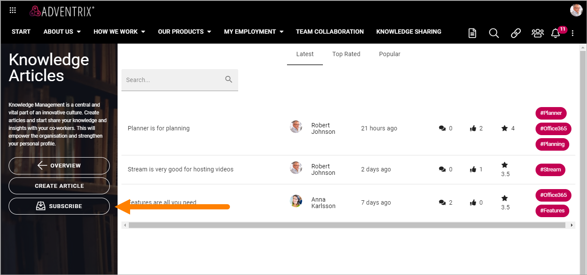
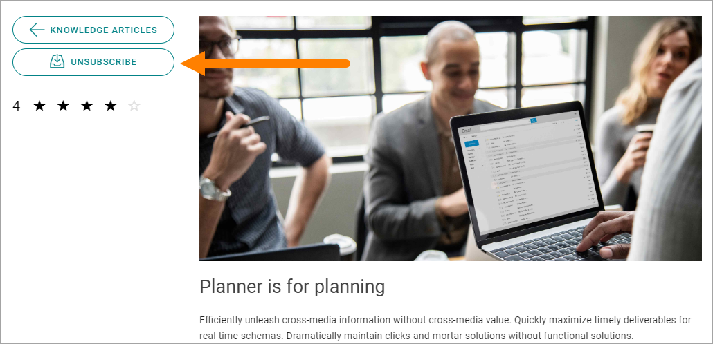

How to subscribe in a Community¶
You can subscribe on all levels of a community.
You can subscribe to all activities in the community, all Knowledge articles and all Discussions in a community by clicking “SUBSCRIBE” in the menu:
If you are already subscribing on this level, the option says “UNSUBSCRIBE” instead. Click it to unsubscribe on that level.

Subscribe to a knowledge article or a discussion¶
To subscribe to a knowledge article or a discussion, do the following:
Go to the knowledge article or discussion.
Click “SUBSCRIBE”.
If you already are subscribing, the option says “UNSUBCRIBE” instead and you can click it to unsubscribe.
Subscribe to tags¶
Tags are global for the whole community, so if you subscribe to a tag, you subscribe to all activities in all knowledge articles and all discussions tagged that way. It can be quite a lot.
To subscribe to a tag, just click it when you see it listed to the right, as here:

Then click “OK” here:

If you click a tag you are already subscribing to, you can choose to unsubscribe.

Follow and subscribe¶
In a list of communities there can be a star present to indicate Follow status. If you follow a community in such a slist, by clicking the star, you also subscribe to the community automatically.